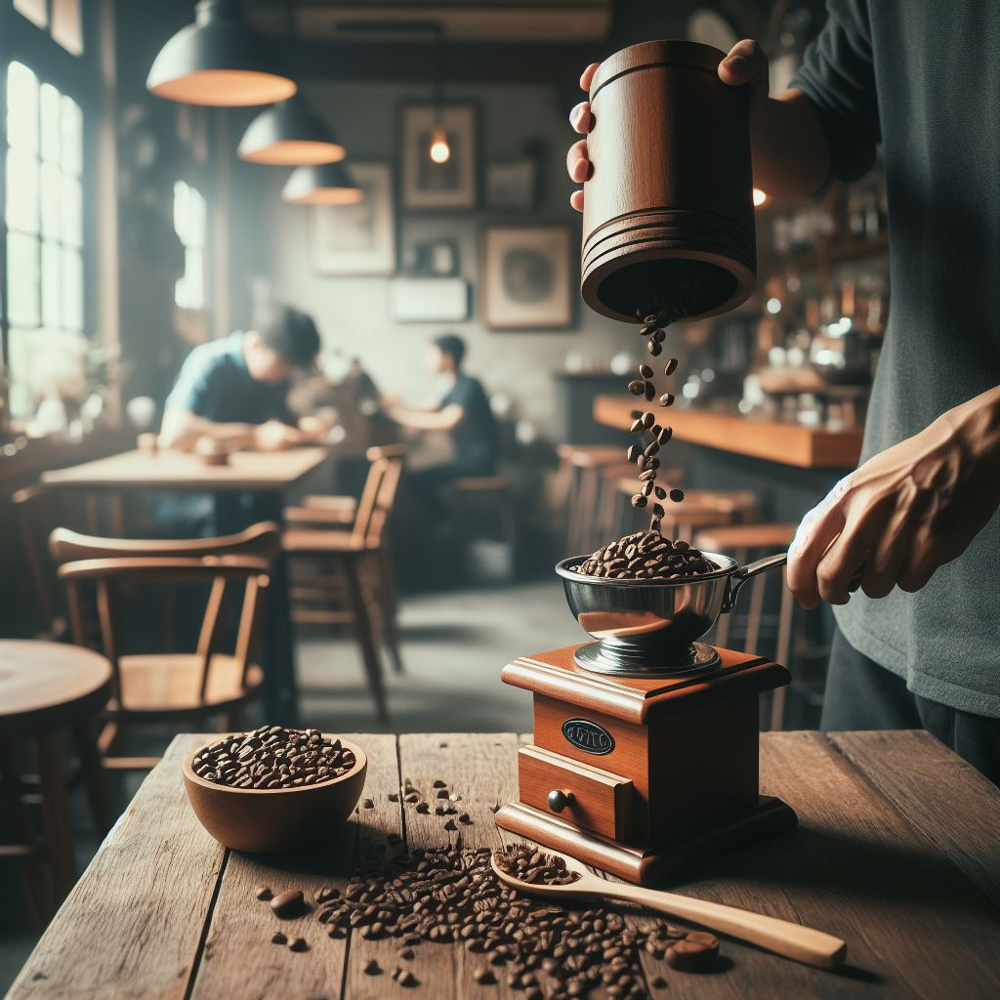
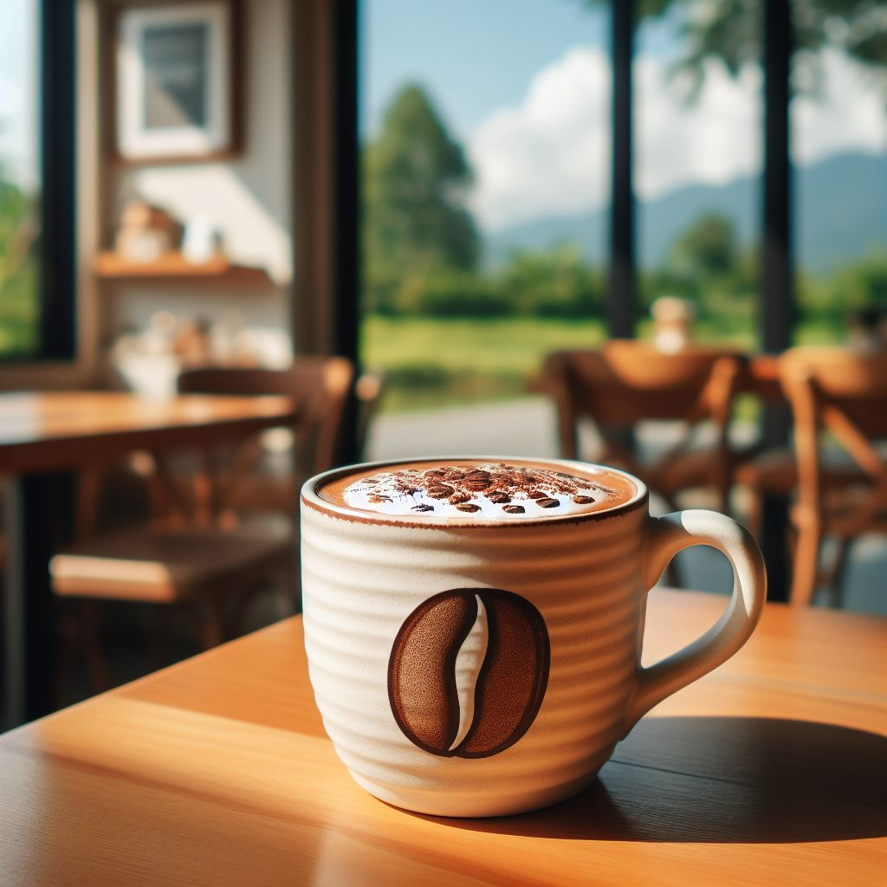
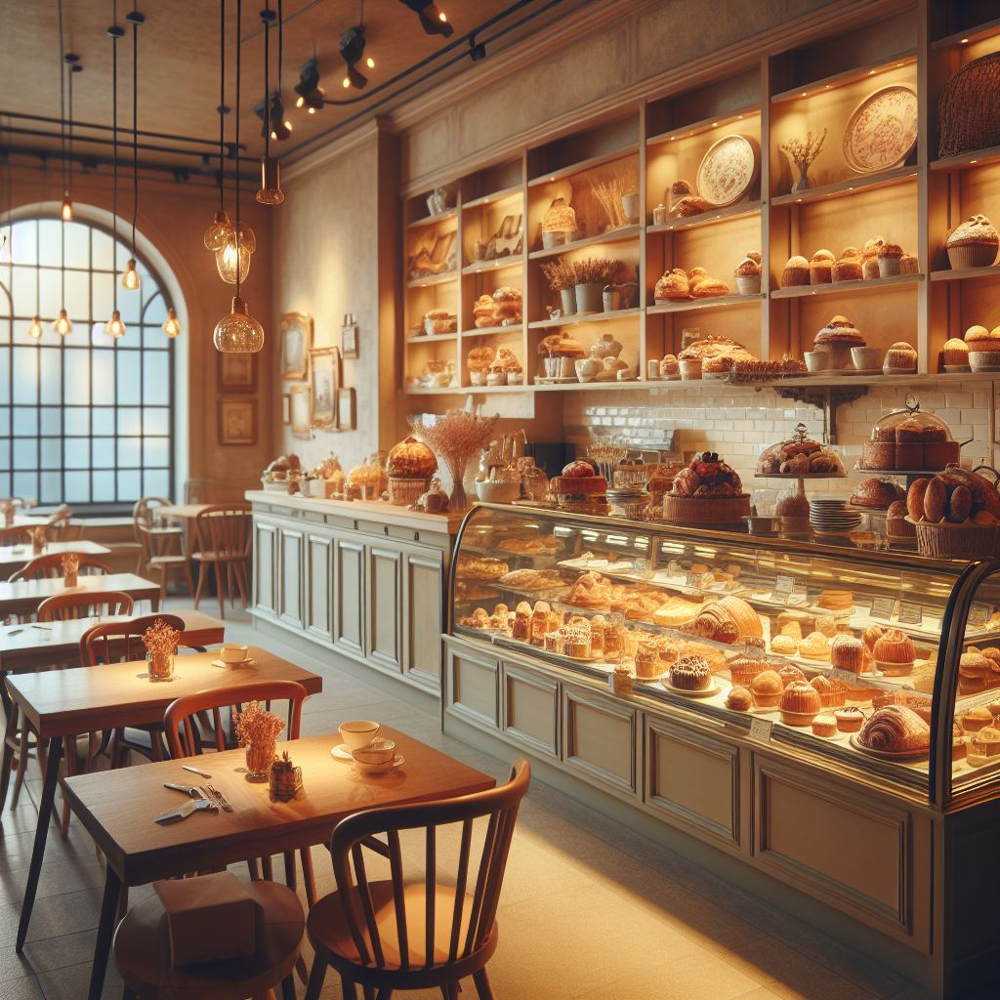
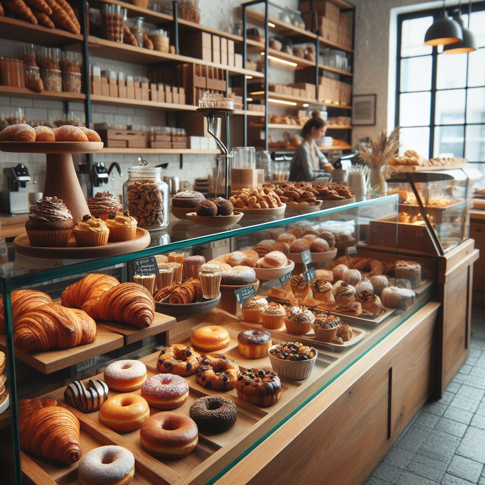
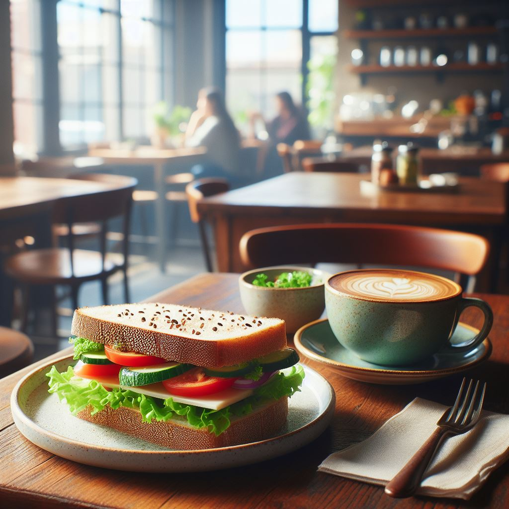
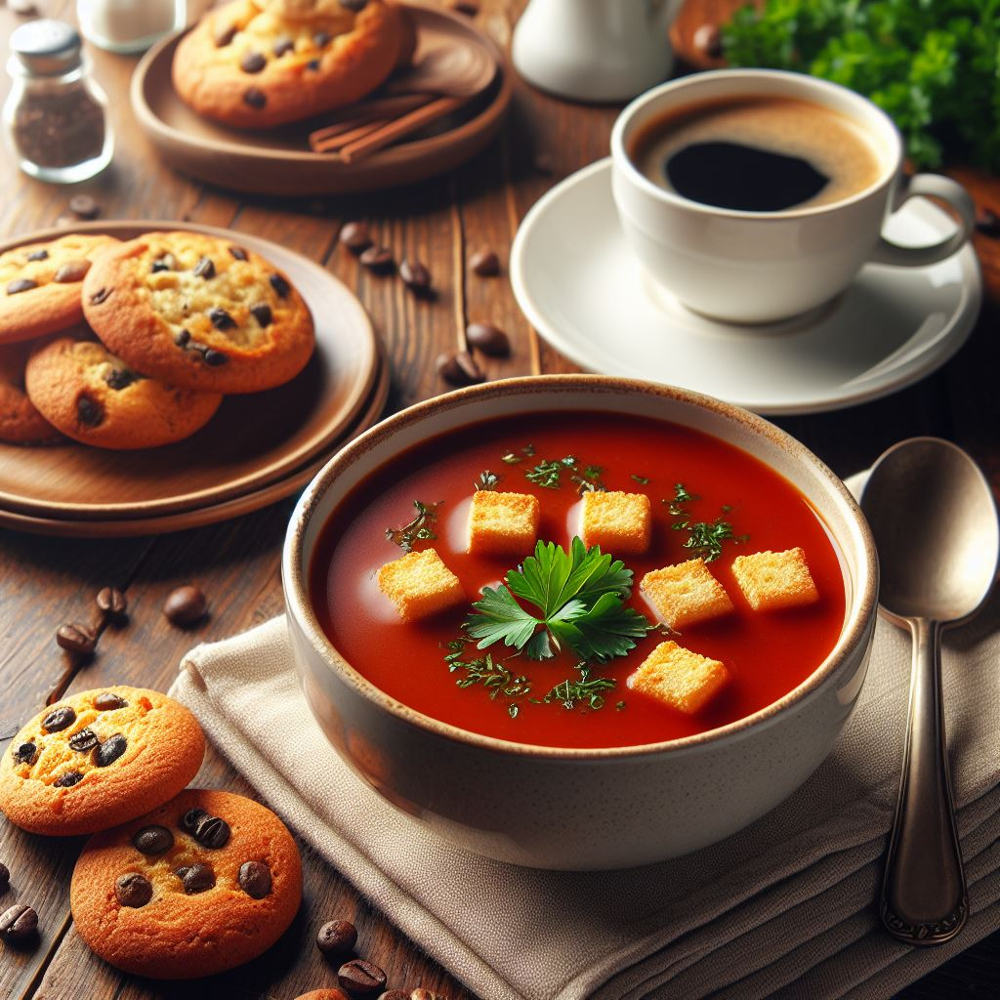
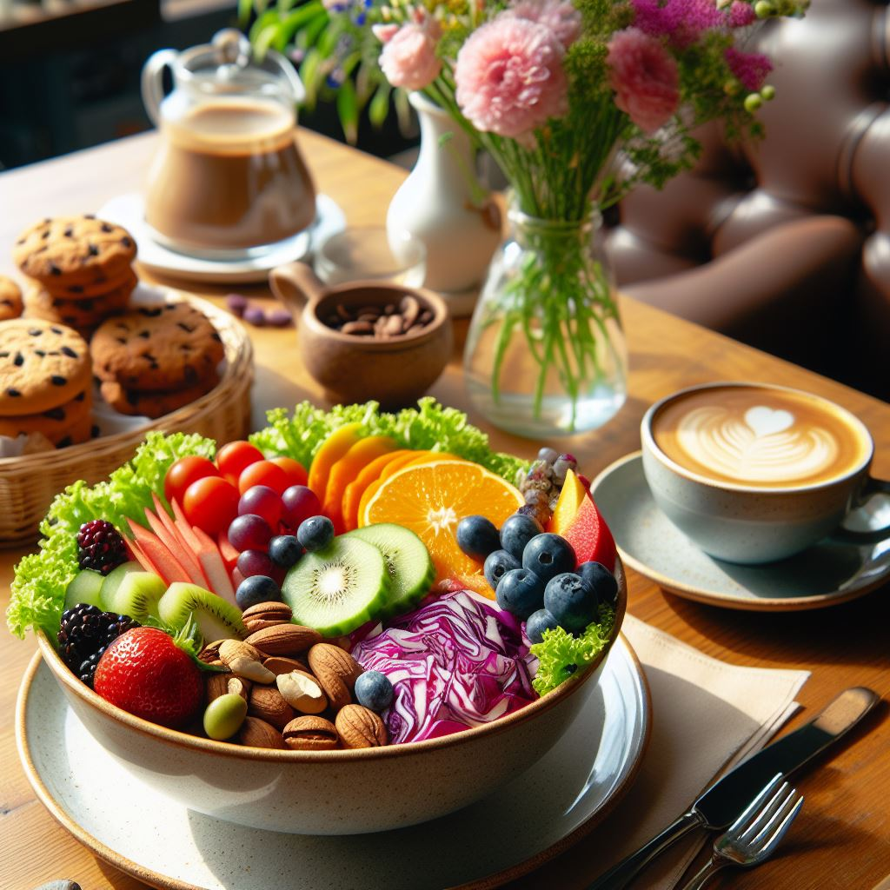
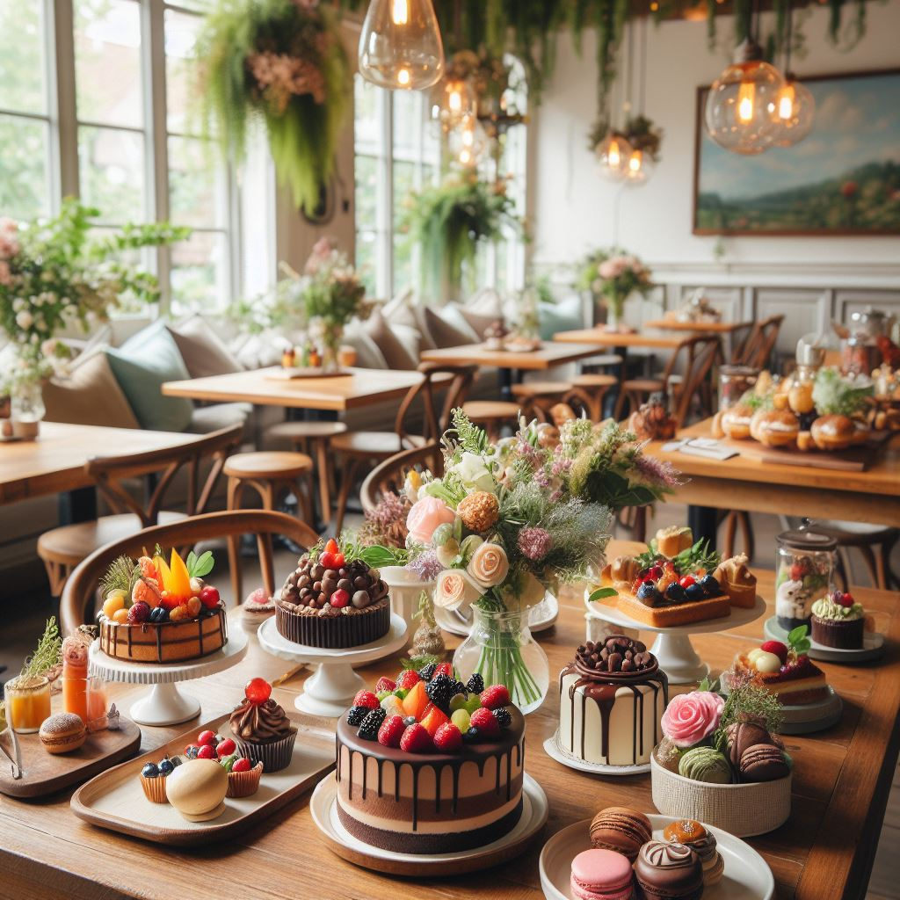
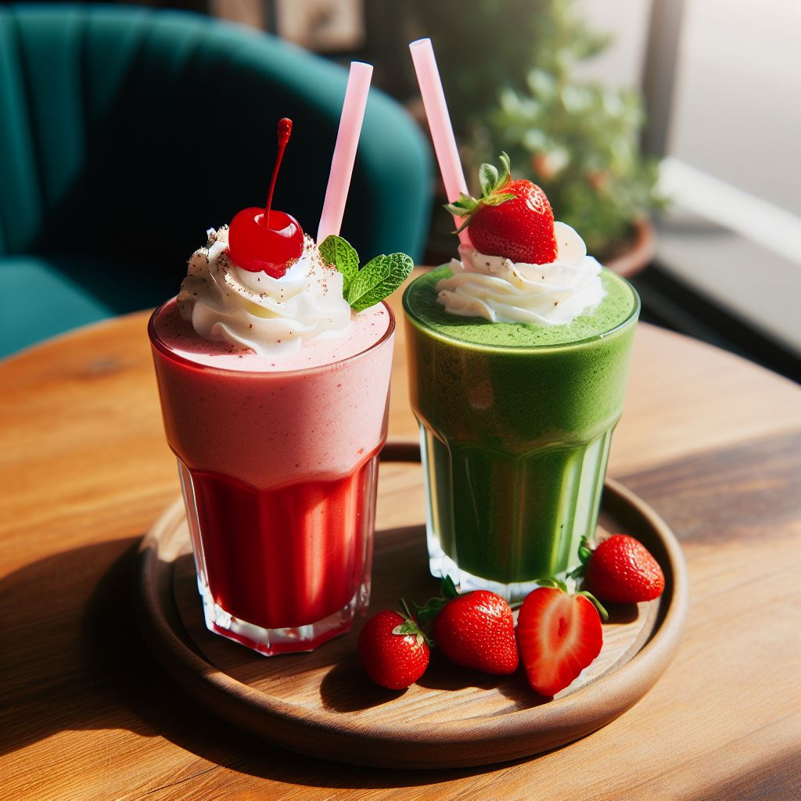
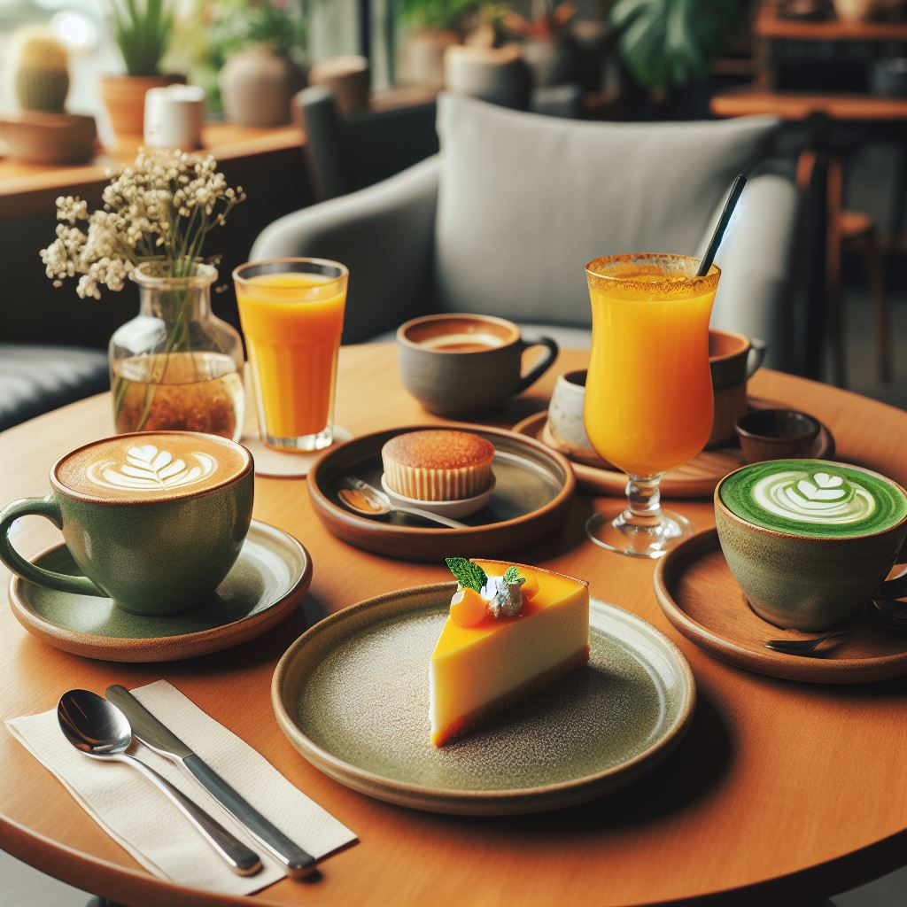

Menu
Beans

- Arabica: Known for its sweet, soft taste and higher acidity. It's the most commonly consumed type of coffee worldwide.
- Robusta: Has a stronger, harsher taste, with a grain-like overtone and peanutty aftertaste.
Roasts
- Light Roast: Light brown in color, with a toasted grain taste and pronounced acidity. The origin flavors of the bean are retained to a greater extent than in darker roasted coffees.
- Medium Roast: Medium brown in color with more body than light roasts. They have a balanced flavor, aroma, and acidity.
- Dark Roast: Dark brown or black in color. They have a sheen of oil on the surface, which is usually evident in the cup when the dark roast coffee is brewed.
Brews
- Espresso: A method of brewing coffee by forcing a small amount of nearly boiling water under pressure through finely-ground coffee beans.
- Drip or Filter: Water seeps through a filter containing ground coffee.
- French Press or Plunger: Coffee grounds are steeped in hot water before being separated out.
Specialty Coffees

- Cappuccino: Equal parts of espresso, steamed milk, and frothed milk.
- Latte: More milk and less foam than a cappuccino.
- Americano: A shot of espresso with hot water added to make a full cup of coffee
- Mocha: A latte with chocolate added
Tea
- Green Tea: This type of tea is made from unoxidized leaves and is one of the less processed types of tea. It therefore contains the most antioxidants and beneficial polyphenols.
- Black Tea: This is the most processed tea and has a stronger flavor compared to other teas. It also has high caffeine content.
- White Tea: This is the least processed tea and has a light, delicate flavor. It's made from the young leaves and buds of the tea plant.
- Herbal Tea: This isn't technically tea, but is instead an infusion of leaves, seeds, roots or bark, extracted in hot water. Examples include chamomile tea, peppermint tea, and rooibos tea.
- Rooibos Tea: This is a type of herbal tea that's popular in South Africa. It's made from the leaves of the rooibos bush.
- Matcha Tea: This is a type of powdered green tea that's often used in traditional Japanese tea ceremonies.
- Chai Tea: This is a type of tea that's made with strong black tea and a mixture of spices, like cinnamon, cardamom, and ginger. It's often served with milk and sugar.
Snacks and Pastries
Snacks

- Chips: These are thin slices of potato that are deep-fried or baked until crispy.
- Popcorn: A type of corn kernel that puffs up when heated.
- Pretzels: A type of baked bread product, usually twisted into a unique knot-like shape.
- Nuts and dried fruits: These are often consumed raw or roasted.
Pastries

- Croissant: A French pastry that is crescent-shaped, made with a leavened puff pastry.
- Danish: A multilayered, laminated sweet pastry in the viennoiserie tradition.
- Tart: A baked dish consisting of a filling over a pastry base with an open top.
- Eclair: An oblong pastry made with choux dough filled with cream and topped with icing.
Sandwiches

- Club Sandwich: This is a sandwich made with toasted bread, lettuce, tomato, bacon, and turkey or chicken.
- BLT: This stands for Bacon, Lettuce, and Tomato. It's a simple sandwich that's often served on toasted bread.
- Chicken Salad Sandwich: This sandwich is made with chicken salad, which is typically a mix of chicken, mayonnaise, and various seasonings
- Tuna Salad Sandwich: Similar to the chicken salad sandwich, but made with tuna instead.
- Grilled Cheese: This is a sandwich made with cheese and bread that's grilled until the cheese is melted.
- Veggie Sandwich: This sandwich is made with various vegetables and often includes cheese or hummus.
- Ham and Cheese: This is a classic sandwich made with ham and cheese, often served on a baguette or similar type of bread.
Soups and Salads
Soups

- Tomato Soup
- Chicken Noodle Soup
- Vegetable Soup
- Minestrone Soup
- Butternut Squash Soup
- Lentil Soup
- Mushroom Soup
Salads

- Caesar Salad
- Greek Salad
- Cobb Salad
- Caprese Salad
- Spinach Salad
- Chef's Salad
- Garden Salad
Desserts

- Cakes: These can come in a variety of flavors such as chocolate, vanilla, red velvet, and carrot.
- Pies: These can be filled with fruits like apple, cherry, or peach, or with cream or custard.
- Cookies: These can be chocolate chip, oatmeal, sugar, or a variety of other flavors.
- Pastries: These can include croissants, danishes, and tarts.
- Ice Cream: This can come in a variety of flavors and may be served with toppings.
- Puddings: These can be chocolate, vanilla, rice, or other flavors.
- Cheesecake: This is a rich dessert that can come in a variety of flavors.
- Muffins: These can be fruit-filled, chocolate, or other flavors.
- Brownies: These are typically chocolate, but can also be flavored with nuts or caramel.
- Cupcakes: These are small cakes designed to serve one person, and can come in a variety of flavors.
Smoothies

- Fruit Smoothies: These are made with a variety of fruits such as strawberries, bananas, blueberries, and mangoes. They may also include fruit juice or yogurt.
- Green Smoothies: These are made with leafy green vegetables like spinach or kale, often mixed with fruits to sweeten them.
- Protein Smoothies: These are often consumed as a post-workout meal and contain protein powder or other high-protein ingredients like Greek yogurt or almond butter.
- Detox Smoothies: These are made with ingredients believed to aid in detoxification, like lemon, ginger, and beetroot.
- Superfood Smoothies: These contain ingredients known for their high nutritional content, like chia seeds, flax seeds, or acai berries
Alcoholic Beverages

- Beer: This includes ales, lagers, stouts, and craft beers.
- Wine: Red, white, and rosé wines are common, as well as sparkling wines like champagne.
- Spirits: These are stronger alcoholic drinks like vodka, gin, rum, tequila, and whiskey.
- Cocktails: These are mixed drinks that can include any combination of the above, along with other ingredients like fruit juices, soda, or cream.
- Liqueurs: These are sweetened spirits with various flavors, such as coffee, chocolate, or fruit.
- Hard Ciders: These are fermented from apples or other fruits.